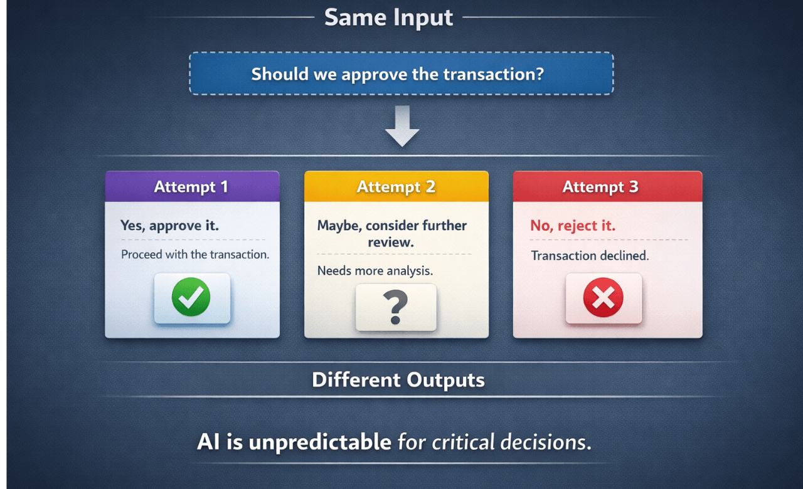
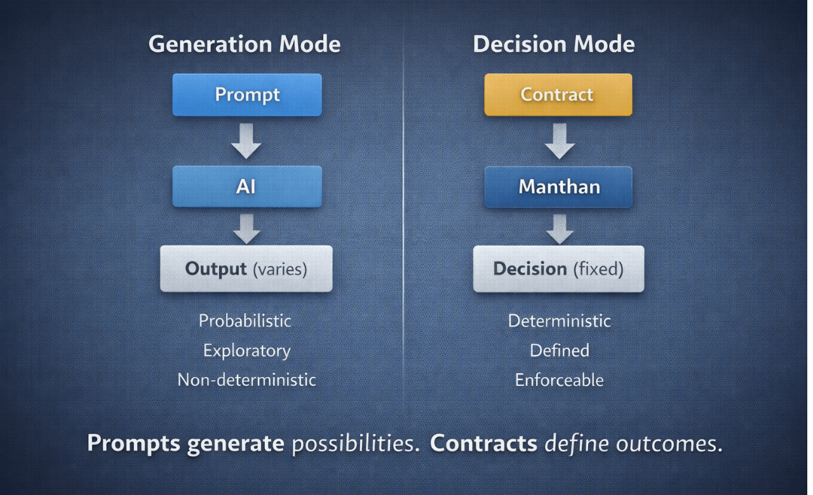
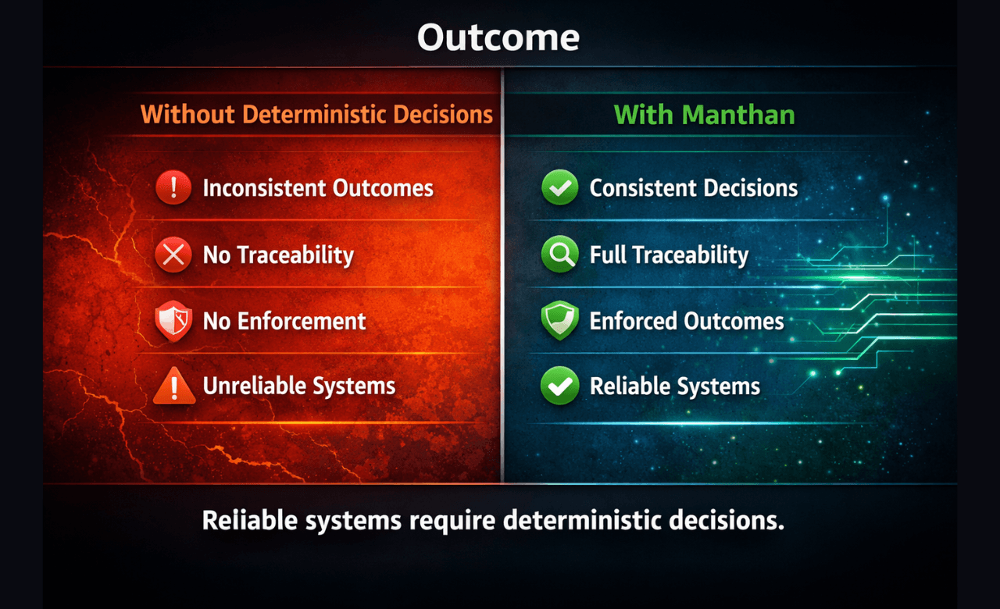

Manthan
Decision Infrastructure
Every system runs on decisions.
Manthan makes them deterministic, auditable, and enforceable.
The Problem

Modern systems — especially AI — operate in probabilistic generation.
The same input can produce different outputs.
There is no traceability. No enforcement.
This makes them unfit for critical systems.
The Shift

Generation
Possibilities
Suggestions
Probabilistic
Decision
Outcomes
Enforcement
Deterministic
How Manthan Works

Input → Contract → Engine → Trace → Enforcement
contract_validation → determinism_check → boundary_check → intent_alignment → base_rules
Fail-fast. Fully traceable. No hidden logic.
What You Get

Full execution trace
Human-readable explanation
Enforced outcome
Live System
Manthan v0.2 is deployed and running.
Explore
Who This Is For
Engineers and teams building systems where correctness, auditability, and enforcement are non-negotiable.
Closing
Software runs on code.
Systems run on decisions.
Manthan makes those decisions reliable infrastructure.